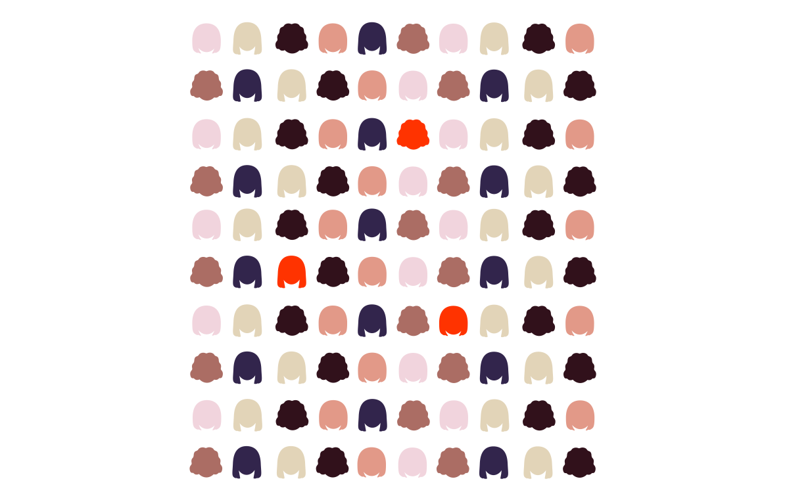

Hyperemesis Gravidarum (HG)
Prevalence
HG affects 3-10 of all pregnant women
It was supposed to be
the happiest time of their lives
But for some, it can turn into a
NIGHTMARE
Nausea + Vomiting
For women affected by HG the Nausea can begin just before 4 weeks of pregnancy.
Scroll!
They can feel sick all the time, sometimes cannot even drink.
Then it is highly recommended to see a doctor !

Their doctors may diagnose them with "Hyperemesis Gravidarum", a severe form of Nausea and Vomiting during Pregnancy.
A prescription of Anti-nausea Medication can alleviate symptoms but for some women the symptoms are still too severe.

So that they can experience multiple hospital visits to obtain fluids against dehydration, special medication and treatment.
Current research is trying to understand
the causes and mechanisms of Hyperemesis Gravidarum (HG)
Growth Factor (GDF15):
A Hormone released by the growing Placenta, transmitted through the bloodstream.
[Fejzo 2019]
A new model explaining Hyperemesis Gravidarum
Recent Research found that, genetically, some mothers have a greater sensitivity to GDF15 which is linked to persistent Nausea and Vomiting. [Fejzo 2024]
Data
The following representation uses data from
"The Norwegian Mother, Father and Child Cohort Study (MoBa)"*
*Den norske mor, far og barn-undersøkelsen
MoBa is an ongoing long-term prospective cohort study of 110,000 pregnant Norwegian women and their children
(Enrollment: 1999−2008)
The quotes used in the story are taken from blogs about HG.
How do women with HG feel ?
(We will use the colors in the following visualization)
Nausea + Vomiting
Firstly, we look at women with nausea and vomiting in combination. The x-axis refers to the month of pregnancy.
Nausea + Vomiting
Now, the y-axis refers to the percentage of 110,000 mothers that participated in the MOBA study.
Nausea + Vomiting
This is an area chart over time (months).
The green area shows the percentage of women suffered from N+V during pregnancy.
Red shows the amount of women hospitalized due to long-term Nausea and Vomiting (overall 3 of all women).
Nausea + Vomiting
As you can see, NV decreases with the fourth month - but not for women with HG! For them, it can last the entire pregnancy.
Nausea + Vomiting
On the right, we look at women who have no combination of Nausea and Vomiting.
Nausea + Vomiting
Percentage of side symptoms of women with Nauseau and Vomiting
Nausea + Vomiting
Percentage of side symptoms of women with Nauseau and Vomiting
Nausea and Vomiting over a longer period can lead to life-threatening dehydration which causes headaches.
Nausea + Vomiting
Percentage of side symptoms of women with Nauseau and Vomiting
Sleeping Problems and Depression are psychologically serious problems that require immediate medical and psychological help.
(Note that the data for sleeping problems from month 4 to 8+ is missing)
How do the symptoms look like in women who have not experienced HG ?
Nausea + Vomiting
Percentage of side symptoms of women with Nauseau and Vomiting
No Nausea + Vomiting
if you have similar symptoms to these women !
Ask your doctor for Antacids or Anti-nausea Medication
that will alleviate your symptoms.